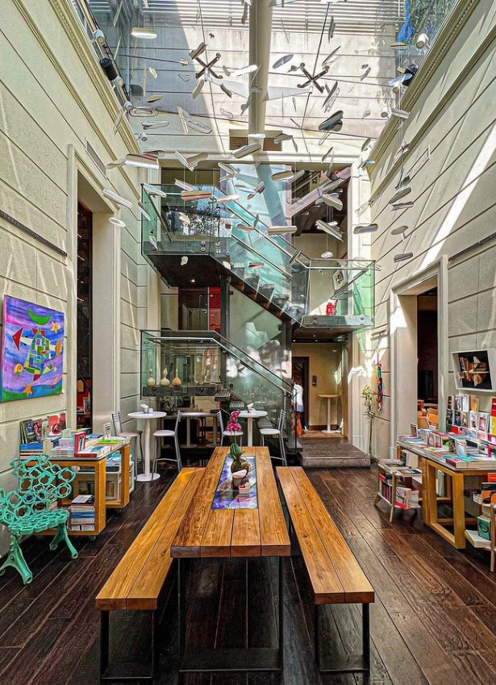

Dain Usina Cultural
Con sus variados espacios, esta librería ubicada en una casona antigua de Palermo invita a relajarse con un buen libro y un rico café en mano.
Backroom
Ubicado en el barrio de Palermo. Es bar, librería, café y hay shows de jazz. Tiene tragos de autor y comidas.
Proa
Espacio con increíbles vistas ubicado en La Boca, que invita a leer, escribir, sacar fotos o tomarse una copa de vino.
Falena
Ubicada en el barrio de Chacarita. Las luces tenues, el verde del patio y la posibilidad de tomar una copa de vino o un café mientras se lee un libro hace que la visita se torne en algo muy interesante.